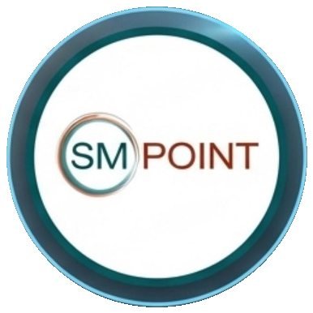

01 / ЗАПРОС
Подготовиться к росту
Компания хотела усилить команду, поддержать руководителей подразделений, систематизировать HR-процессы и определить направление дальнейшего развития.
Как усилить команду, вырастить руководителей и создать основу для масштабирования компании.

Видео, предоставленное вместе с материалами кейса.
SM Point — один из первых проектов Soul of the System. Работа охватывала обучение, управление, организационную структуру и корпоративную культуру.
Компания хотела усилить команду, поддержать руководителей подразделений, систематизировать HR-процессы и определить направление дальнейшего развития.
Развивали управленческие навыки, коммуникацию, ответственность и взаимодействие между подразделениями. Помогали сотрудникам раскрыть потенциал и увереннее решать рабочие задачи.
Участвовали в изменении организационной структуры и формировании стратегического вектора. По материалам прежнего кейса также прорабатывались роли, должностные инструкции и базовая HR-документация.
Помогали сотрудникам разбирать сложные ситуации, сомнения и профессиональные задачи. Поддерживали переход менеджеров по продажам к руководящим функциям.
Поддерживали внутреннюю коммуникацию и командные мероприятия: праздники, дни рождения и «Тайного Санту». Формировали традиции и ощущение единой команды.
Сотрудники становились увереннее, руководители получали поддержку, а компания — более понятный вектор движения. SM Point продолжила масштабироваться.
Мы помогли укрепить управленческий потенциал, командное взаимодействие и HR-основу для роста. Масштабирование SM Point стало результатом множества факторов — мы не приписываем его только нашей работе, но внесли свой вклад в готовность команды к изменениям.